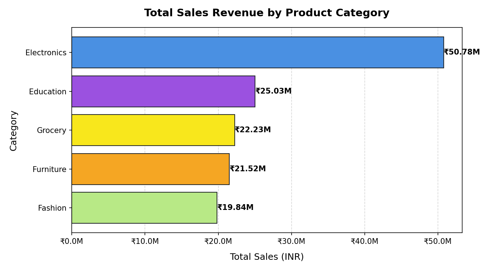
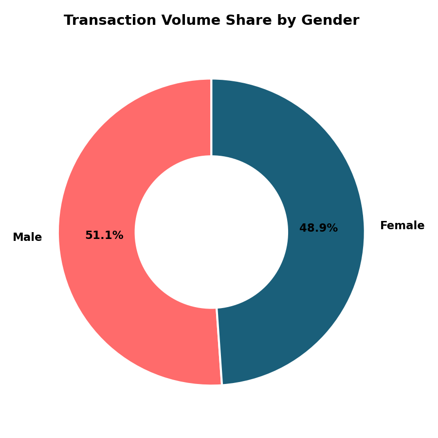

ApexPlanet Sales Performance & Customer Strategy
A comprehensive, data-driven narrative detailing data cleaning audits, exploratory insights, RFM segmentations, and rigorous statistical hypothesis validation.
Dhanish Ladwani
Data Analytics Portfolio Project
Part 1: Data Wrangling & Sequence Restoration
Why data cleaning is the most critical first step in any analytical pipeline.
Analyzing raw data directly often leads to flawed business conclusions. In the provided sales transactions dataset, we identified and programmatically resolved three major issues:
- Order_ID sequence corruption: 8 distinct sales transactions (for different customers, dates, and amounts) were all saved under the duplicate ID `ORD100050`.
- Missing customer demographics: 20 transaction records lacked age values. Without imputation, we could not build a reliable target age profile.
- Missing customer geographies: 13 transactions had empty city records, skewing geographic sales tracking.
We implemented a standalone Python pipeline script that handles these anomalies automatically, ensuring any future raw data dumps are cleaned consistently.
Part 1: Cleaning Execution & Audit Log
Documenting the cleaning operations applied to the 1,000 sales transactions.
Cleaning Log Actions
Sequence Corruption Fixed 8 Order IDs
Age Imputations (Overall Median) 20 Values (Age 41.0)
City Imputations (Unknown Label) 13 Records
Data Type Standards Applied Int32 / Datetime
Quality Audit Verification
The pipeline runs automated assertions post-execution:
- Asserts that **total remaining null values = 0**.
- Asserts that **duplicate Order_ID values = 0**.
- Asserts that **Total_Sales matches (Quantity * Unit_Price)**.
Part 2: Top-Line Business Metrics
Uncovering baseline operational volumes, pricing, and revenues.
Primary Sales Findings
- Balanced Genders: Male transactions represent 51.1%, and Female represent 48.9%.
- Balanced Geography: Patna (13.5%), Kolkata (13.3%), Mumbai (13.1%), Delhi (12.5%), and Hyderabad (12.5%) lead.
- Strong Pricing Driver: Strong correlation (0.817) between Unit Price and Sales; Quantity has a moderate correlation (0.536).
Part 2: Product & Category Breakdown
Identifying top-performing categories and high-ticket products.
Category-level aggregations show a clear revenue hierarchy, with one high-value category representing more than **35% of all sales**:
Laptops and Mobiles perform almost identically, generating ₹25.44M and ₹25.34M respectively.

Part 3: Customer Behavioral Modeling (RFM)
Developing scoring metrics to map buying behavior and customer value.
What is RFM?
RFM is a behavioral segmentation model that evaluates three core dimensions to measure customer loyalty and transaction frequency:
Custom Bins for Frequency
Because **94.5%** of our customers have made only **1 transaction**, traditional equal-size quantiles fail. We defined custom rules:
- **Frequency = 1:** Assigned Score 1 (94.5% of base)
- **Frequency = 2:** Assigned Score 3 (5.4% of base)
- **Frequency >= 3:** Assigned Score 5 (0.1% of base)
Part 3: Customer Segment Distribution
Profiling the 947 unique customers into behavioral cohorts.
| Cohort | Customers | Share | Action Plan |
|---|---|---|---|
| Champions | 197 | 19.7% | VIP rewards, early access |
| Loyal Customers | 199 | 19.9% | Upsell, reviews, loyalty points |
| New Customers | 134 | 13.4% | Welcome series, onboarding |
| At Risk | 152 | 15.2% | Win-back discounts, survey |
| Lost / Low-Value | 157 | 15.7% | Low-cost email reactivation |

Part 4: T-Test (Weekday vs Weekend spends)
Checking whether the day of week influences average transaction values.
The Hypothesis
- H0: Mean Weekday Spend = Mean Weekend Spend (Equal means)
- H1: Mean Weekday Spend ≠ Mean Weekend Spend (Unequal means)
Weekday Mean Spend (n=712): ₹1,41,893.71
Weekend Mean Spend (n=288): ₹1,33,233.06
Mean Difference: ₹8,660.65
Welch's T-Test Statistics
t-statistic: 1.0911
p-value: 0.2757
95% Confidence Interval: [-₹6,931.24, ₹24,252.54]
Part 4: Gender Preferences (Chi-Square)
Checking whether gender and product category choice are independent.
The Hypothesis
- H0: Gender and Category selection are independent.
- H1: Gender and Category selection are associated (dependent).
Minor Observed Preferences
• Females buy more **Fashion** (89 observed vs 76.28 expected)
• Males buy more **Electronics** (196 observed vs 180.89 expected)
Chi-Squared Statistics
Chi-Squared statistic: 9.0936
Degrees of freedom: 4
p-value: 0.0588
Business Recommendations & Live Portfolio
Actionable steps backed by statistical rigor and links to live artifacts.
Reactivate "At Risk" Cohort (15.2% of base)
Target these past heavy spenders with personalized win-back offers and discounts.
Uniform Weekly Ad-Spend
Do not pay premiums for weekend ad spots, as spends are statistically identical.
Gender-Neutral Product Marketing
General product categories are statistically independent of gender. Deploy broad campaigns.
Live Portfolio Links
Repository: View on GitHub
Interactive Dashboard: Open Live
Reveal.js presentation: Open Live